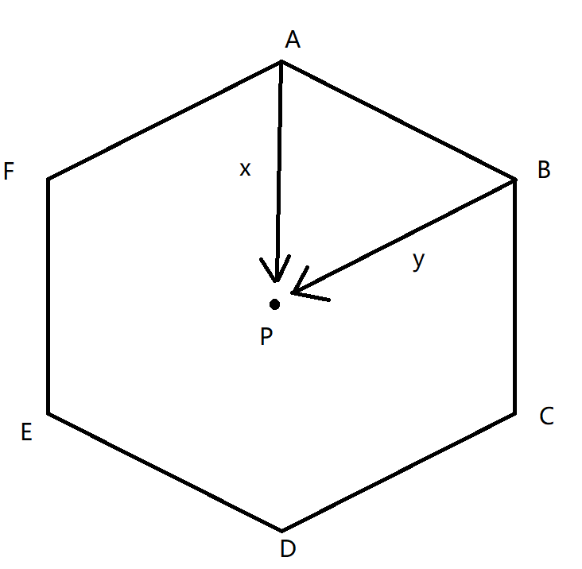

杭师训练赛第四场
A - Mental Rotation
- 题意：给出n*n的字符矩阵和旋转序列，L表示逆时针旋转，R表示顺时针旋转，求完成整个旋转序列后的矩阵。
- 思路：
- 统计逆时针旋转的次数num， 因为旋转4次相当于没有旋转，所以旋转(num%4+4)%4次即可。
- 逆时针旋转90度：a[i][j] = b[j][n-i+1] ,i,j均从1开始
1 |
|
B - SpongeBob SquarePants
- 题意：给定长宽判定是否为正方形
1 | int main(){ |
C - I Don’t Want To Pay For The Late Jar!
- 题意：给定d组数据，每组一个n和s，后面n行输入fi和ti，若s>=ti，第i项权值为fi，否则第i项权值为fi-(ti-s)，求最大权值。
1 | int d,n; |
E - Optimal Slots
- 题意：有n个节目需要安排，每个节目占用一定单位的时间，各个节目的时间不能重合，你有T单位的时间可以使用，问最多可以安排多少时间，并且输出字典序最小的具体方案。
- 思路：01背包求具体方案。
1 | int m,n,a[200]; |
F - Military Class
- 题意：有2n个士兵排成两行，每行都从1到n进行标记。现在要将这些士兵两两配对。给出k对关系(i,j)，第一行的i和第二行的j不能配对，问有多少种方案可以完成n组配对。（n<2000,e<5,k<2000）
- 思路
- e<5是一个关键信息，一般这种情况极大的可能是状压dp。
- f[i][j]表示在处理到第2行第i个士兵时，第1行中与之距离<=e的士兵的匹配情况，采用状态压缩，1表示已匹配，0表示未匹配，j的范围为[0,2^(2*e+1)-1]
f[i][j] = ∑(f[i-1][ (j^(1<<k)) >>1]) + ∑(f[i][j] += f[i-1][( (j^(1<<k)) >>1) | (1<<2*e)])- 初态：f[1][j]=1，其中j的二进制位只有1个1。
- 终态：f[n][num]，num为j的最高e+1位全1的状态。
- 上式含义为对于第i个阶段的状态j，枚举j的第k位为1的情况A，A的答案由上一个阶段在相应位置没有1情况B转移得到，所以要先将j的第k为先置0。由于j只能包含当前状态的2*e+1个位置，所以上一个阶段的状态需要由j右移一位得到，而最高位有0和1两种状态，都要分别记入答案。
1 | ll f[N][N]; |
H - Are You Safe?
- 题意：给出n个点，求凸包，再给p个点，问这些点是否在凸包内。
- 思路
- 求凸包
- 判定点是否在凸包内：P-A得到向量x，P-B得到向量y，求x和y的叉积f。依次求出凸包上相邻两点的叉积，若当前求出的叉积与上一次求出的叉积符号不同，则说明点不在凸包内。

1 | int dcmp(double x) { |
I - To Crash Or Not To Crash
- 题意：给一个字符矩阵，找到’=’右边第一个不是’.’的字符
1 | char a[10][20]; |
J - Kitchen Plates
- 题意：给出5个字符的大小关系，将字符从小到大依次输出。
- 思路：数据小，直接全排列，然后判断是否有满足条件的字符对即可；数据大的话找建有向图求拓扑序。
1 | int f[10][10]; |
K - Help The Support Lady
- 题意：机器人在同一时间接到了n个任务，第i个任务耗时x[i]，只要在2*x[i]的时间内完成第i个任务，这个任务的发布者就会满意，请问最多可以使多少任务发布者满意。
- 思路
- 贪心，优先完成耗时小的任务，如果前面完成的任务总时间小于当前任务的时间，则当前任务可以满足要求，否则就把当前任务舍弃掉。
- 因为当前任务对答案的贡献为1，如果前面的任务耗时已经比当前任务的，并且要因为当前任务而舍弃前面的任务的话，对答案的贡献并不会增加，所以直接舍弃没有问题。
1 | int t,n; |
本场总结
- 涉及知识点：矩阵转置，小模拟，背包问题输出具体方案，状压dp，凸包，叉积，拓扑排序，贪心。
个人总结
总体来说没什么大问题，签得飞起。